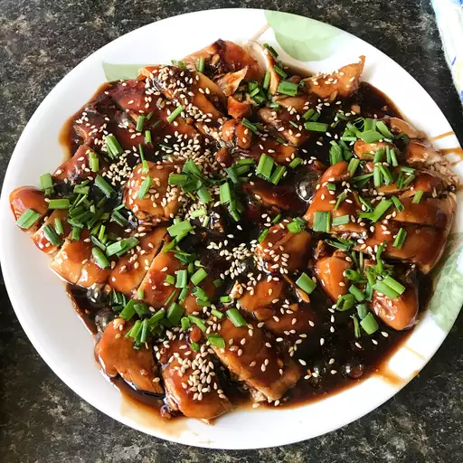

Lasagna

Ingredients
- 2 tablespoons cornstarch.
- 2 tablespoons water.
- 1 cup low-sodium soy sauce.
- ½ cup white sugar
- ¼ cup mirin (Japanese sweet wine).
- 4 teaspoons grated fresh ginger.
- 3 cloves garlic, minced
- ¼ teaspoon red pepper flakes.
Steps
- Preheat oven to 400 degrees F (200 degrees C).
- Whisk cornstarch and water together in a small bowl until dissolved;
set aside. Combine soy sauce, sugar, mirin, ginger, garlic, and red pepper
flakes together in a saucepan over medium heat until the mixture starts to
simmer. Slowly whisk in cornstarch mixture. Bring to a boil; reduce heat to
medium-low, and simmer until thickened, stirring often, about 10 minutes.
- Pat chicken dry with paper towels; arrange in a baking dish.
Pour sauce over chicken breasts, coating all sides.
- Pat chicken dry with paper towels; arrange in a baking dish. Pour sauce
over chicken breasts, coating all sides.
Home